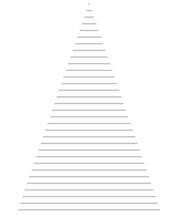

Viết chương trình nhận vào một số từ hộp thoại, việc nhập kết thúc khi người dùng nhập vào giá trị -1.
Mỗi giá trị nhập được sẽ được hiển thị ra và thực hiện tính tổng các giá trị đó.
Viết chương hình hiển thị thẻ <hr> theo độ rộng từ 1 đến 100. Kết quả sẽ được hiển thị như hình
